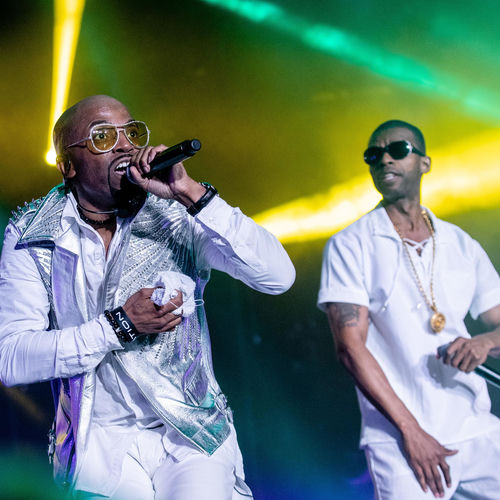

Wreckx-n-Effect
Wreckx-n-Effect is an American hip-hop group from Harlem, New York City. They are best known for their 1992 single "Rump Shaker", which peaked at number two on the Billboard Hot 100.
Complete Discography & Tracklists (6)